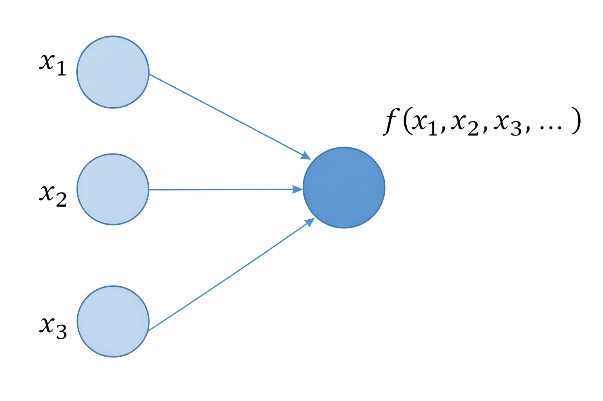

Learning Objectives
Introduction
The main objective of this lesson is to obtain an overview of how neural networks work, and to provide you with a solid foundation, should you wish to dive deeper into these models, and apply them in your research.
We will primarily explore a 'vanilla neural network': which represents the simplest network architecture and is not really used in practice. It is, however, very useful in aiding an understanding the fundamentals of training deep neural networks.
What is deep learning?
If you have completed the course up to this point, you should be familiar with classical machine learning as a concept: a collection of techniques that allow computers to improve their predictions by learning from patterns and structure in your data. Classical machine learning approaches thus often requires humans to carefully decide how data should be represented before learning can take place.
Deep learning is essentially an extension of this, where this process is largely automated through the use of neural networks with multiple layers, which learn patterns and representations directly from your data. This is the important distinction: instead of relying on carefully selected and provided features, deep learning models automatically discover useful features by progressively transforming raw inputs in an increasingly abstract way.
This layered learning process makes deep learning particularly effective for complex tasks such as image recognition, speech transcription and natural language comprehension, where explicit rule-based solutions are often very challenging to define. These so-called intuitive problems - tasks that are easy for human cognition to process, but are difficult to describe using explicit rules - are where deep learning excels.
This strength is thought to come from the combination of:
- Learning from experience
- Representing information hierarchically
Alongside the term 'deep learning', artificial intelligence will likely be another that you have heard, in abudance.
Broadly speaking, Artificial intelligence (AI) is the field of computer science concerned with building systems that can perform tasks which normally require human intelligence. These tasks include learning from experience, recognising patterns, reasoning under uncertainty, making decisions and adapting behaviour, in response to new information.
Rather than being explicitly programmed with fixed rules for every situation, AI systems are often designed to identify structure in data, using this to guide their actions. In this sense, intelligence is not hard-coded, but emerges from the interaction between algorithms, data and learning processes.
An interesting historical quirk of AI is that, as soon as a task becomes reliable and part of a routine, it often stops being labelled as “AI” at all. This phenomenon is known as the AI effect. A good example of this is optical character recognition: once considered a core AI challenge, it is now so commonplace that it is rarely thought of as intelligent behaviour.
What are neural networks?
import torch # this is the PyTorch module
import torch.nn as nn # this is the neural network module
import torch.nn.functional as F # this is the functional module
import torch.optim as optim # this is the optimizer module
import torchvision # this is the vision module
import warnings
warnings.filterwarnings("ignore") # this is to ignore warnings
# Import the MNIST dataset
from torchvision import datasets, transforms
# Import the matplotlib module
import matplotlib.pyplot as plt
# Import the numpy module
import numpy as npNeurons & layers
Neurons are the basic unit of a neural network, and they are organised in layers. Remember that it is this eventual, cumulative hierarchy of concepts (represented by each layer) that is characteristic of deep learning.
In the figure below, we illustrate a neural network consisting of:
- An initial layer of 3 neurons and
- A second layer with only 1 neuron

Let's think of each neuron as holding a number. In the example above:
- The neurons in the initial layer hold each of the input values: $x_1, x_2, x_3$
- The single neuron in the second layer holds the output of a certain function $f$, that takes as
- This function $f$ is called the activation function.
# define a tensor for x, and
# set requires_grad to True: this indicates to PyTorch that we plan to compute
# the gradient of this tensor
x = torch.tensor(data=2.0, requires_grad=True)
# define the function y; the double asterisk denotes 'to the power of'.
y = 2*x**3 + x + 1
# calculate the gradient of y with respect to x:
y.backward()
# Assign the gradient (dy/dx) to a variable, and print:
dy_dx = x.grad
print(f'dy/dx for x = 2: {dy_dx}')---------------------------------------------------------------------------
NameError Traceback (most recent call last)
Cell In[2], line 6
1 # FIXED WITH OUTPUT
2
3 # define a tensor for x, and
4 # set requires_grad to True: this indicates to PyTorch that we plan to compute
5 # the gradient of this tensor
----> 6 x = torch.tensor(data=2.0, requires_grad=True)
8 # define the function y; the double asterisk denotes 'to the power of'.
9 y = 2*x**3 + x + 1
NameError: name 'torch' is not defined# Plot the function y and the gradient dy/dx at a range of values for x, using Numpy's arange function.
x_range = np.arange(-5, 5, 0.1)
# Calculate the gradient of y with respect to x using PyTorch iteratively over the range of values for x:
#Begin by creating two empty lists:
dy_dx_torch = []
y_list = []
#Populate these with the following for loop:
for i in x_range:
x = torch.tensor(i, requires_grad = True)
y = 2*x**3 + x + 1
y.backward()
dy_dx_torch.append(x.grad)
y_list.append(y.item())
# Convert these lists into numpy arrays:
dy_dx_torch = np.array(dy_dx_torch)
y = np.array(y_list)
# Plot the function y and the gradient dy/dx at a range of values for x:
plt.plot(x_range, y, label='y')
plt.plot(x_range, dy_dx_torch, label='dy/dx')
plt.legend()
plt.xlabel('x')
plt.ylabel('y')
plt.title('Function y and its gradient dy/dx')
plt.show()---------------------------------------------------------------------------
NameError Traceback (most recent call last)
Cell In[3], line 4
1 # FIXED WITH OUTPUT
2
3 # Plot the function y and the gradient dy/dx at a range of values for x, using Numpy's arange function.
----> 4 x_range = np.arange(-5, 5, 0.1)
6 # Calculate the gradient of y with respect to x using PyTorch iteratively over the range of values for x:
7
8 #Begin by creating two empty lists:
9 dy_dx_torch = []
NameError: name 'np' is not defined# We can define the same neuron function as before, but this time using PyTorch instead of Numpy:
def neuron_in_pytorch(x, w, b, activation_function=torch.tanh):
# Calculate the dot product of the inputs and the weights:
z = torch.dot(x, w) + b
# Apply the activation function to the dot prdouct:
a = activation_function(z)
return a
# Define a tensor for x, make it a vector, and set requires_grad to True:
x = torch.tensor([0.2, 0.3], requires_grad=True)
# Define the weights and bias:
w = torch.tensor([1.0, 0.4])
b = torch.tensor(1.0)
# Define the function y:
y = neuron_in_pytorch(x, w, b)
# Calculate the gradient of y with respect to x:
y.backward()
# Assign the gradient (delta y over delta x) to a variable, and print:
dy_dx = x.grad
print(f'dy/dx for x = [0.2, 0.3]: {dy_dx}')---------------------------------------------------------------------------
NameError Traceback (most recent call last)
Cell In[4], line 5
1 # FIXED WITH OUTPUT
2
3 # We can define the same neuron function as before, but this time using PyTorch instead of Numpy:
----> 5 def neuron_in_pytorch(x, w, b, activation_function=torch.tanh):
6 # Calculate the dot product of the inputs and the weights:
7 z = torch.dot(x, w) + b
8 # Apply the activation function to the dot prdouct:
NameError: name 'torch' is not defined# Plot a x^2 function:
x = np.arange(-2, 2.1, 0.1)
y = x**2
plt.plot(x, y)
plt.xlabel('Input x')
plt.ylabel('Output y')
# Using matplotlib.pyplot's annotate function, label the minimum with a black arrow, and text label, as follows:
plt.annotate('Minimum', xy=(0, 0), xytext=(0, 0.5), arrowprops=dict(facecolor='black', shrink=0.05))
plt.show()---------------------------------------------------------------------------
NameError Traceback (most recent call last)
Cell In[5], line 4
1 # FIXED WITH OUTPUT
2
3 # Plot a x^2 function:
----> 4 x = np.arange(-2, 2.1, 0.1)
5 y = x**2
6 plt.plot(x, y)
NameError: name 'np' is not defined# Write a function that starts with a random value for x, and then iteratively updates x using the gradient descent algorithm:
def gradient_descent(x, learning_rate=0.1, n_iterations=100):
learning_rate = torch.tensor(0.1)
x_list = []
for i in range(n_iterations):
# Define the function y:
y = x**2
# Calculate the gradient of y with respect to x:
y.backward()
with torch.no_grad():
# Update x; here -= subtracts learning rate * x.grad from x, and assigns the result to the variable x.
x -= learning_rate * x.grad
# Print the updated value of x:
print(f'x at iteration {i}: {x}')
# Append the updated value of x to the list:
x_list.append(x.item())
# Set the gradient to zero, otherwise it will accumulate:
x.grad.zero_()
return x, x_list# Define a tensor for x, make it a scalar, and set requires_grad to True:
x = torch.tensor(20.0, requires_grad = True)
# Call the gradient_descent function:
x, x_list = gradient_descent(x, learning_rate=0.1, n_iterations=150)
# Plot the function y = x^2:
x = np.arange(-20, 20.1, 0.1)
y = x**2
plt.plot(x, y)
# Plot the values of x that were updated during gradient descent, make each point a red star and overlay it onto
# the function y = x^2:
plt.scatter(x_list, [i**2 for i in x_list], color='red', marker='*', s=100, zorder=10)
plt.xlabel('Input x')
plt.ylabel('Output y')
plt.show()---------------------------------------------------------------------------
NameError Traceback (most recent call last)
Cell In[7], line 4
1 # FIXED WITH OUTPUT
2
3 # Define a tensor for x, make it a scalar, and set requires_grad to True:
----> 4 x = torch.tensor(20.0, requires_grad = True)
6 # Call the gradient_descent function:
7 x, x_list = gradient_descent(x, learning_rate=0.1, n_iterations=150)
NameError: name 'torch' is not definedplt.plot(x_list)
plt.axhline(y=0, color='r', linestyle='--', label='true $x_{minimum}$')
plt.xlabel('iteration')
plt.ylabel('x')
plt.legend()
plt.show()---------------------------------------------------------------------------
NameError Traceback (most recent call last)
Cell In[8], line 3
1 # FIXED WITH OUTPUT
----> 3 plt.plot(x_list)
4 plt.axhline(y=0, color='r', linestyle='--', label='true $x_{minimum}$')
5 plt.xlabel('iteration')
NameError: name 'plt' is not defined